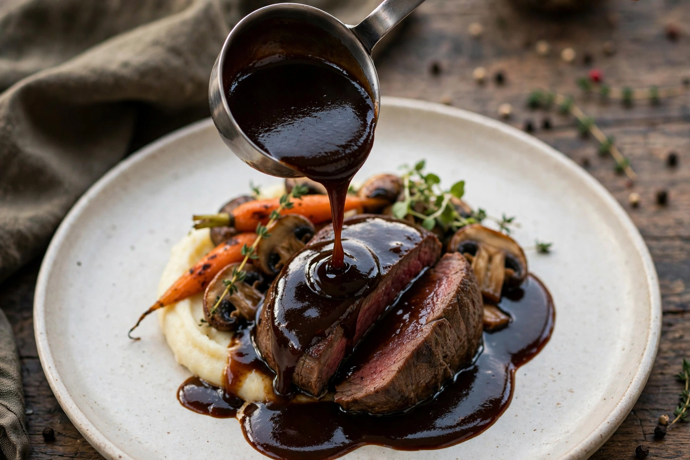

| Demi-glace | |
|---|---|
 Demi-glace: rich, glossy, and intensely flavoured | |
| Type | Sauce |
| Place of origin | France |
| Main ingredients | Sauce espagnole, brown veal stock, sometimes Madeira or sherry |
| Systematised by | Marie-Antoine Carême; Auguste Escoffier |
Demi-glace (French: [dəmi ɡlas], "half glaze") is a rich brown sauce in French cuisine used as a base for many other sauces. It is traditionally made by combining equal parts of sauce espagnole and brown veal stock and reducing the mixture by half, producing a sauce of deep colour, glossy sheen, and concentrated flavour that coats the back of a spoon.
In the classical system of Carême and Escoffier, espagnole — itself a fortified brown sauce thickened with roux — is simmered with additional brown stock for hours, skimmed constantly, and reduced until syrupy. A splash of Madeira or dry sherry is often added at the end. The process can take two days from raw bones to finished demi-glace, which is why it is sometimes called the "king of sauces" and why modern kitchens often substitute reduced, unsalted stock enriched with gelatin.
Demi-glace is the foundation of the brown "small sauces": bordelaise (red wine and bone marrow), chasseur (mushrooms and tomato), Robert (onion, mustard, and white wine), and Madeira sauce. A spoonful enlivens pan sauces for steak, roast meats, and game, in much the same foundational role that sauce tomate plays among the red sauces.
Because the classical method is so labour-intensive, demi-glace is now commonly sold as a concentrate or produced in-house by reducing stock alone. Chefs debate whether stock-only versions deserve the name, but the product remains a benchmark of classical French technique.